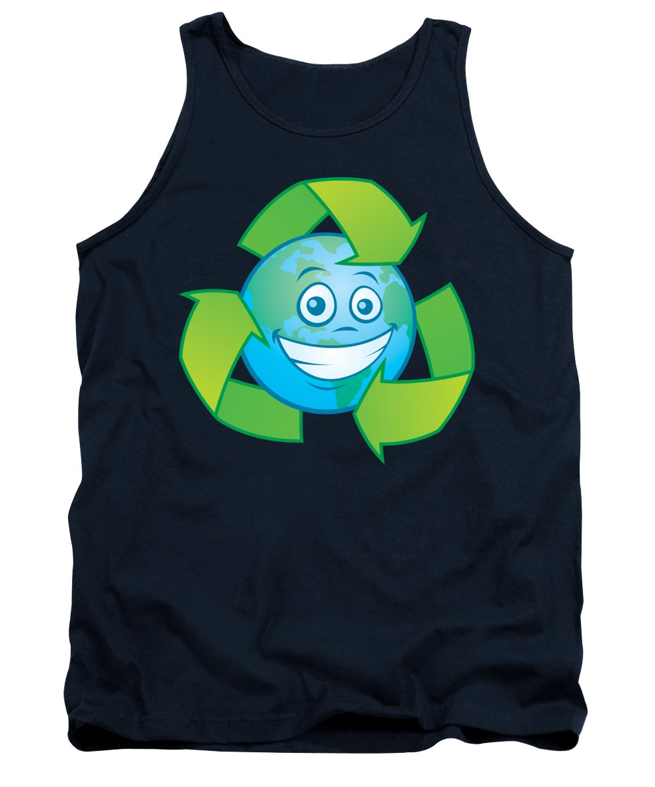
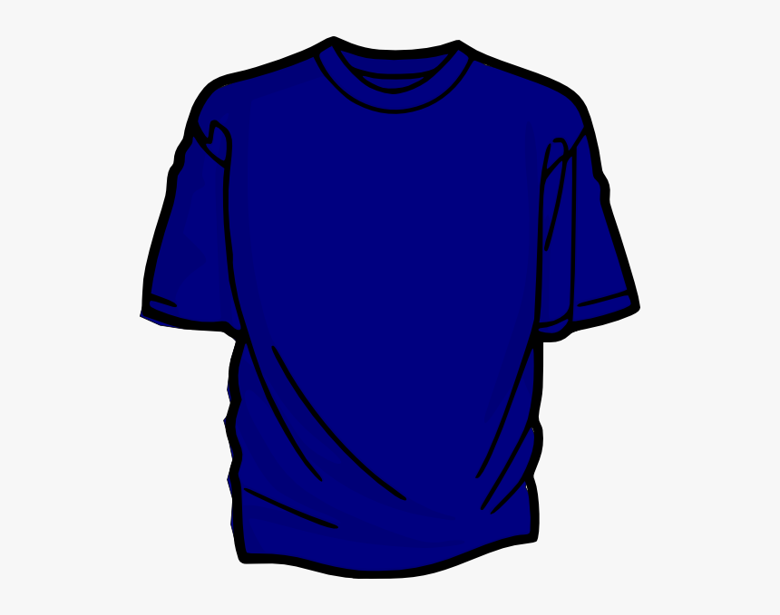

Of the fundamental physiological needs of humans, clothing is interesting, as it bridges the gap between necessity and identity. On one hand, clothing provides a layer of protection from the immediate environment; it can keep you warm, shield you from the Sun, or camouflage you from predators. On the other hand, clothing can help form an individual’s identity, such as wearing a uniform, cultural or ceremonial garb, or something unique and meaningful to that individual. Therefore, while important for survival, clothing has allowed people to identify themselves through style and fashion.
5 Bras

There’s no question that women today have much more freedom than their historical counterparts, and that much can be seen with the rise in popularity of the bra. The predecessors of bras first appeared in ancient Greece as a wrap that women would wear around their chest. In the 1500s, corsets became the staple for upper- and middle-class women catering to the standards of beauty.
4 Hoodies

While suits have transitioned from rebellious icon to a symbol of corporate conformity, the hooded sweatshirt, or hoodie, has remained an icon for the rebellious underground. While hoods have existed throughout history, Champion Products claims to have created the hoodie in the 1930s.
3 Tank Top
With its sleeveless design and thin material, the tank top is the optimal piece of clothing for hot environments. Go to any warm location, and you are bound to see multiple men and women wearing it. Its name leads one to believe that it originated from the military, but tank tops actually stemmed from the growing freedoms of women in the early 1900s. In 1912, the Olympic Games in Stockholm added women’s swimming to the competition
2 Pants
Nothing feels better after a long day at work than peeling off this confining leg wear, which begs the question: What’s with all the pants? The short answer is that they provided a military advantage. It is much easier to ride horses while wearing pants than it is to do so in robes or togas (sorry Greeks and Romans). The first recorded usage of pants was during the sixth century BC by Greek geographers who were noting the leg wear of Central Asian and Persian horse riders
1 T-shart
Arguably the most popular article of clothing in the modern day, T-shirts have expanded to include various styles, designs, and cuts while crossing cultural and socioeconomic boundaries. The T-shirt has modest beginnings that stem from workers who modified their long johns into two pieces so that they could be worn in warmer weather. The top half was modified by the Cooper Underwear Company in 1904, and the “bachelor undershirt” was created.